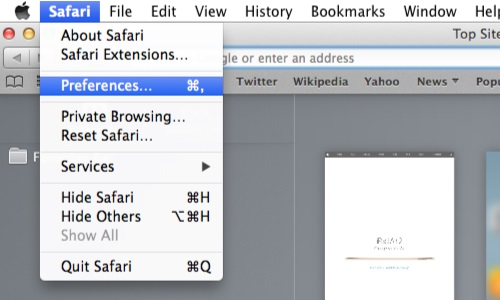
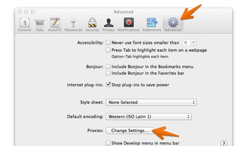
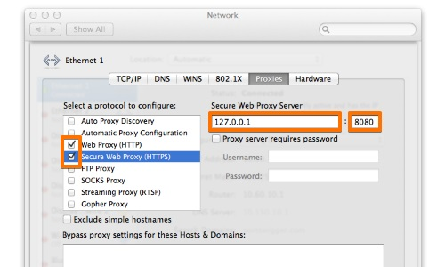
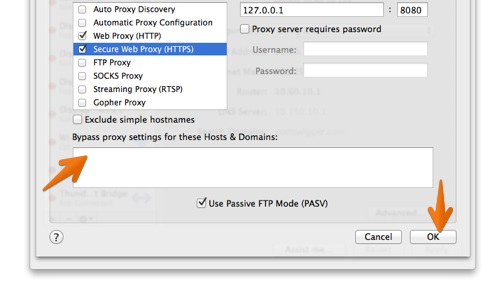

Burpと連携するようSafariを設定する
Burpでのテストに使用できるようにSafariを設定するには、次の設定手順を実行してください。
Safariで、Safariメニューに移動し、"設定"をクリックします。

"詳細設定"タブをクリックし、"プロキシ"の下の"設定の変更"ボタンをクリックします。これにより、現在のネットワークアダプタのネットワーク構成設定が開きます。

Proxyタブで、"Web Proxy (HTTP)"ボックスをチェックし、"Web Proxy Server"にBurp Proxyリスナーのアドレス(デフォルトは127.0.0.1)と、(ラベルのない)ポートフィールドにBurp Proxyリスナーのポート番号(デフォルトは8080)を入力します。
「セキュリティで保護された Web プロキシ (HTTPS)」チェックボックスでもこの手順を行います。

"これらのホスト・ドメインのプロキシ設定をバイパス"ボックスが空になっているか確認します。
"OK"と"適用"をクリックし、開いているダイアログボックスを閉じます。
